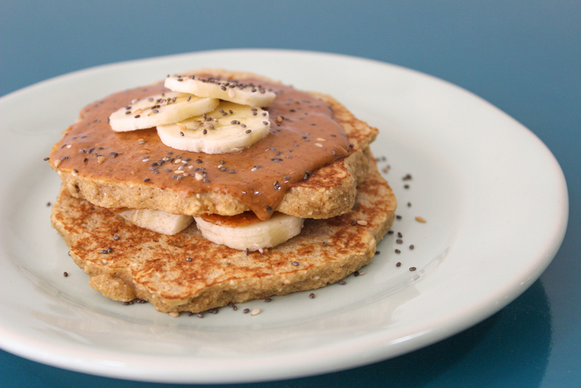

Ingredientes
2 ovos
1 banana
1 xícara farinha de chia
1 xícara leite de coco
3 colher Whey Protein; sopa
1/2 colher sal chá
50 ml óleo de girassol
50 g pasta de amendoim
Instruções de Preparo
1. Misture primeiro o óleo e os ovos.
2. Depois, acrescente o leite, o whey protein e a farinha até a que a mistura fique consistente.
3. Acrescente o sal e leve a massa em uma frigideira ao fogo brando.
4. Deixe dourar de um lado para em seguida virar para o outro. Se for necessário, use uma espátula para mudá-la de posição e facilitar o desgrude.